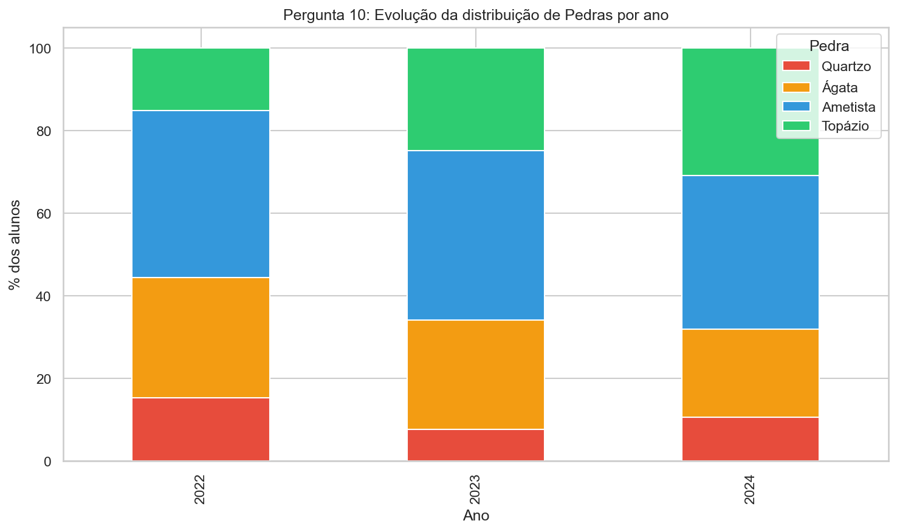
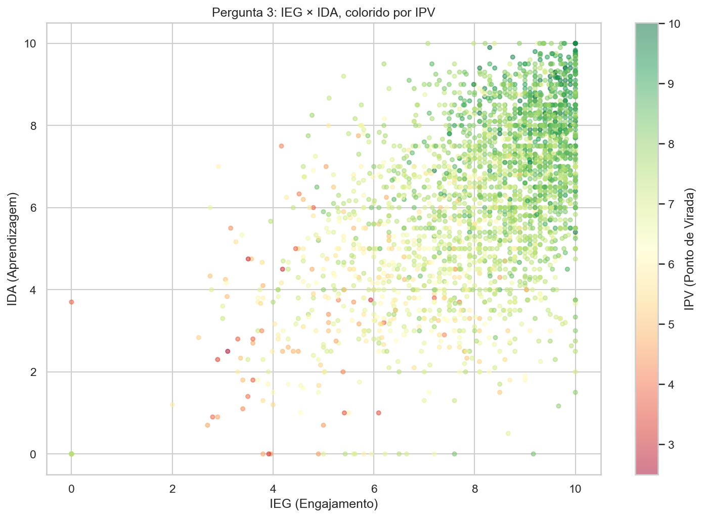
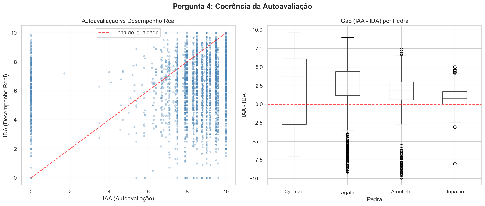
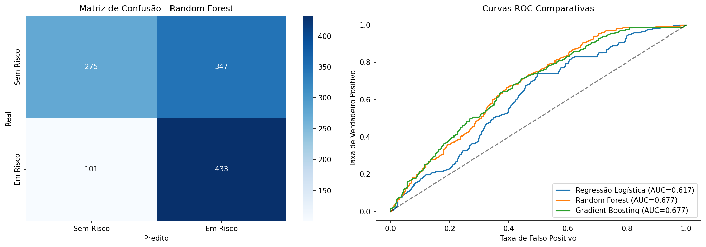

Arnaldo Janssen T T L
POSTECH DTAT | 2026
Arnaldo Janssen T T L
POSTECH DTAT | 2026
"Acreditamos que a educação é a ferramenta mais poderosa para a transformação social verdadeira e duradoura."
Evidência indiscutível de que a permanência no programa transforma o resultado dos alunos.

O INDE (Índice de Desenvolvimento Educacional) é o índice global — uma combinação linear exata construída através desses 7 sub-indicadores que classifica o aluno na sua respectiva Pedra (Quartzo, Ágata, Ametista ou Topázio).
| Sigla | Nome | O que mede |
|---|---|---|
| IAN | Adequação ao Nível | Adequação de série vs idade do aluno |
| IDA | Aprendizagem | Desempenho acadêmico nas ferramentas formais |
| IEG | Engajamento | Participação proativa, entregas e frequência |
| IAA | Autoavaliação | O senso autocrítico do aluno com o próprio desempenho |
| IPS | Psicossocial | O suporte emocional e o convívio social na instituição |
| IPP | Psicopedagógico | Suporte pedagógico necessário e recebido |
| IPV | Ponto de Virada | Marcação de transformação profunda e irreversível na trajetória |
O IAN é derivado matematicamente da defasagem (nosso target), e o INDE é a soma dos demais. Dar isso ao algoritmo é "data leakage". Ele não previa o futuro, apenas "lia a resposta".
Atingir o FV faz o aluno raramente regredir. Alunos com alto IPV possuem IDA na casa de 7.55 (vs 5.08 do grupo baixo).
Causa e consequência. Tem alta correlação com notas boas. Monitorar a presença salva estudantes a tempo.
Nota bruta abaixo de 5.0 quase obrigatoriamente acompanha a defasagem.


| Modelo | F1-Score | Recall | ROC-AUC |
|---|---|---|---|
| Regressão Logística | 0.622 | 0.708 | 0.617 |
| Random Forest | 0.659 | 0.811 | 0.677 |
| Gradient Boosting | 0.642 | 0.758 | 0.677 |
A lição mais sagrada desse modelo:
O modelo aprende inteiramente a partir do comportamento social e rotineiro daquela criança, e não da sua defasagem em si.
Com o topo sendo liderado pelo quarteto de IPV (13.8%), IEG (12.4%), Fase (11.4%) e IDA (11.1%), o Random Forest previne e alcança 4 de cada 5 alunos em risco antecipadamente, cravando os 81% massivos de Recall final.

Fica provado que a persistência no ecossistema Passos Mágicos traz o real impacto esperado. Como conclusões finais de recomendação, eu indico:
Arnaldo Janssen Tavares Toledo Laudares